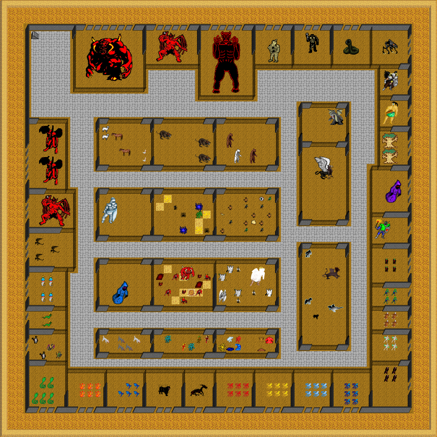

Map Zoo, Lower Level, in region The Kingdom of Scorn. Map level: 1.
Map view:

(click for larger view)
Exits from this map:
Exits to this map:
Monsters found on map: angel, Angel Knight, Arch Angel, awful rat, baby dragon, Balrog, Banshee, basilisk, bear, Belzebub, big demon, bone drake, broo, byakie, Chaos Knight, Chaos Priest, chaos witch, cold dragon hatchling, crawling chaos, cyclops, Dark Gryphon, Dave, demon, Demon Lord, dire wolf, dire wolf sire, dragon hatchling, drake, earth witch, electric dragon hatchling, Elite Dread Knight, ent, faerie dragon, Fiend, fire witch, ghast, giant cobra, giant rat, Giant Worm, golem of Necromancer, goose, Greater Demon, High Angel, horse, hyper kobold, ice para-elemental, ice warrior, imp, Jessy, kobold, lamia, lava man, lava para-elemental, Lich, light angel, lightning para-elemental, living chaos, lokanth, messenger, Minor Chaos Priest, minor djinn, mud para-elemental, Mudman, Necromancer, polar bear, Retributioner, shadow, shadow dragon, shadow mastiff, Shadow Tiger, shadow wyvern, shadowtiger pup, sheep, Skeletal Mage, skree, sorcerer, tsunami, unusual kobold, water para-elemental, water witch, wight, wizard, wolf.
The Kingdom of Scorn's map index | Region index | Global map index | World map
{kind=link}